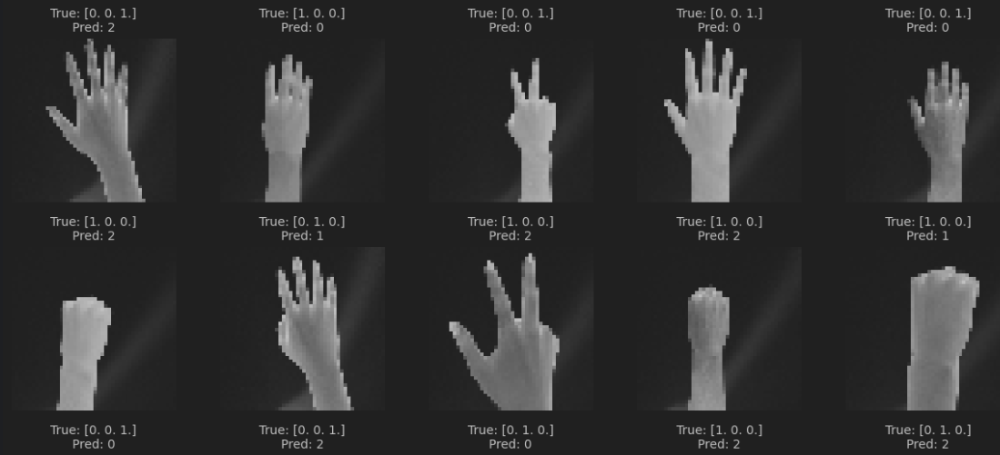
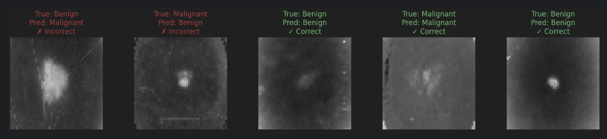

A showcase of various projects I've worked on throughout my career.
MUL-T
Multi-tool designed for red team pen-testing with various utilities.
Garage System
A GUI for a garage management system with a backend database.
GitHub
US Housing Value Model

Linear regression model predicting US housing values.
GitHub
Cardiovascular Disease Prediction Model

Predicting likelihood of cardiovascular disease.
GitHub
Spam Email Detector

ML model for email spam detection.
GitHub
Road Accident Severity Prediction

ML model predicting crash severity using various crash elements.
GitHub
Schizophrenia Diagnosis Prediction
ML model predicting schizophrenia based on personal/lifestyle factors.
GitHub
Emotion Detection
ML model detecting emotional patterns in facial features.
GitHub
Network Port Prediction
ML model predicting network traffic ports using traffic data.
GitHub
Rock Paper Scissors CNN

Convolutional Neural Network for hand gesture recognition.
GitHub
Melanoma Detection

MLP model classifying skin lesions as benign/malignant.
GitHub